熟悉代码及模板工程
本课程提供了已实现8条指令的单周期CPU demo工程，并且这8条指令的数据通路和控制信号均已包含在数据通路表的模板当中。
demo工程已实现的8条参考指令
miniRV示例工程已实现的指令有：addi、ori、slli、lui、lw、beq、bne、jal。
miniLA示例工程已实现的指令有：addi.w、ori、slli.w、lu12i.w、ld.w、beq、bne、b。
在开始设计你的CPU之前，请使用demo工程运行功能仿真，结合仿真波形，对照实验原理、数据通路表及示例代码，分析CPU架构及工作原理，理解指令在CPU中的执行过程，体会不同指令执行时数据通路的变化。
demo工程同时可作为模板工程，后续可在此基础上进行开发。
1. 下载demo工程并运行仿真
点击实验指导书首页的课程材料下载链接，根据需要选择下载对应的demo工程。
有4个demo工程，我要下载哪个？
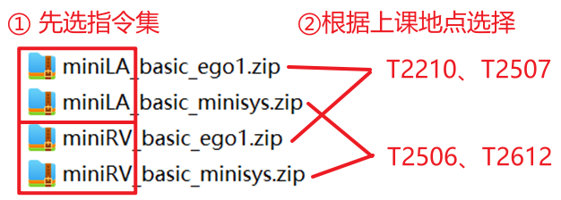
首先，选择指令集是miniRV或miniLA，然后再根据上课的实验室进行选取 —— 在T2210、T2507上课的同学，请选择文件名带有“ego1”后缀的工程；而在T2506、T2612上课的同学，则选择文件名带有“minisys”后缀的工程。
在Vivado界面左侧点击运行功能仿真，如图1-2所示。等待一段时间后，出现仿真波形窗口。
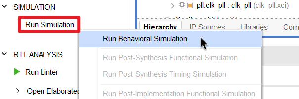
点击Run All按钮，如图1-3所示，Testbench将通过测试并停止。
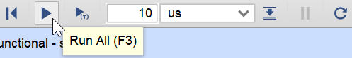
此时的仿真波形是CPU运行lw.dump测试程序（miniLA则是ld.w.dump）所产生的。
仿真波形窗口默认包含了复位、时钟、外设信号，以及CPU的取指信号和数据访存信号，各信号的解释和说明如图1-4所示。
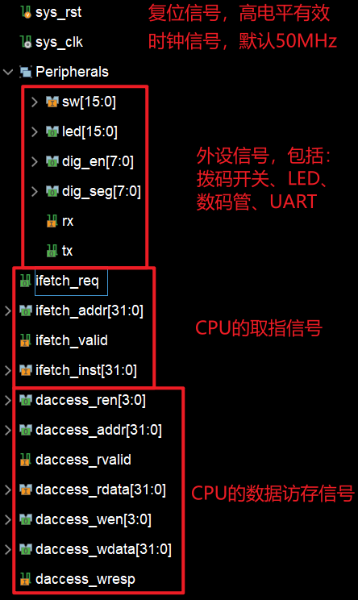
soc_simple_tb.wcfg的信号说明外设信号的波形为什么是高阻 Z？
demo工程尚未实现外设的I/O接口电路，无法读写外设数据，相关信号也尚未连接，因此仿真波形上部分外设信号呈现高阻状态，这是正常的。
2. CPU模块的接口信号
由图1-4可知，CPU模块对外有两组接口信号，分别用于取指令和读写主存的数据，这两组接口信号的定义分别如表1-1、表1-2所示。
| 信号 | 位宽 | 属性 | 功能描述 |
|---|---|---|---|
ifetch_req |
1 | 输出 | 取指请求信号：高电平表示CPU需要取指 |
ifetch_addr |
32 | 输出 | 取指的地址（字节地址） |
ifetch_valid |
1 | 输入 | 指令存储器返回的指令的有效信号 有效一个时钟表示返回一条指令 |
ifetch_inst |
32 | 输入 | 指令存储器返回的指令机器码 |
取指时序解读
此处以miniRV的demo工程为例，介绍CPU的取指时序。在仿真波形上任意选取一段波形，如图1-5所示。
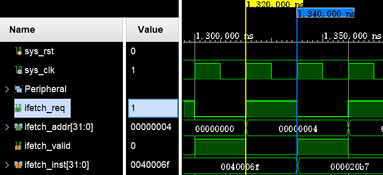
- 【1320ns】CPU需要取指时拉高
ifetch_req信号，同时给出指令地址ifetch_addr。inst_req信号 仅有效一个时钟周期。 - 【1340ns】指令存储器接收指令地址，并在读取操作完成后，拉高
ifetch_valid信号，告知CPU指令已经返回，同时把指令机器码通过ifetch_inst信号返回给CPU。
由lw.dump第11行可知，地址为0x4的指令机器码是0x000020b7（lui x1, 0x2），与波形相符。
| 信号 | 位宽 | 属性 | 功能描述 |
|---|---|---|---|
daccess_ren |
4 | 输出 | 读使能信号（有效：4'hF，无效：4'h0） |
daccess_addr |
32 | 输出 | 读/写地址 |
daccess_rvalid |
1 | 输入 | 数据存储器返回的读数据有效信号 有效一个时钟表示返回一个读数据 |
daccess_rdata |
32 | 输入 | 数据存储器返回的读数据 |
daccess_wen |
4 | 输出 | 写使能信号，支持写字、半字、字节 （有效：非零值，无效： 4'h0） |
daccess_wdata |
32 | 输出 | 写数据 |
daccess_wresp |
1 | 输入 | 数据存储器返回的写响应信号 有效则表示写操作已完成 |
读数据时序解读
此处以miniRV的demo工程为例，介绍CPU读数据的时序。在仿真波形上任意选取一段波形，如图1-6所示。
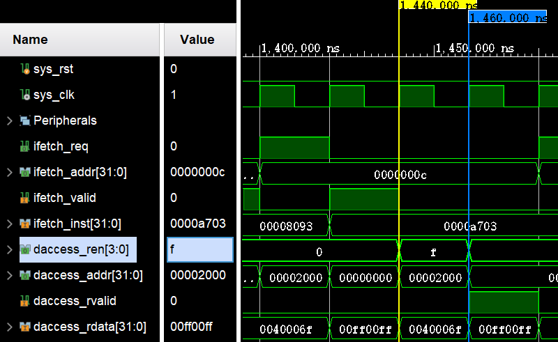
由lw.dump第13行可知，地址为0xC的指令机器码是0x0000a703（lw x14, 0(x1)），是读访存指令。
- 【1440ns】CPU需要读访存时令
daccess_ren信号有效，同时给出读地址daccess_addr。daccess_ren信号 仅有效一个时钟周期。 - 【1460ns】数据存储器接收读地址，并在读取操作完成后，拉高
daccess_rvalid信号，告知CPU数据已经返回，同时把数据通过daccess_rdata信号返回给CPU。
由lw.dump第231行可知，在数据段中，地址为0x2000的32位数据值是0x00ff00ff，与波形相符。
3. 实例解析
下面以miniRV demo工程已实现的addi指令为例，结合数据通路表和控制信号表示例、仿真波形、CPU示例代码以及汇编代码，解释指令在单周期CPU中的执行过程。同学们请参照此过程自行分析和理解其他指令的执行原理。此外，还可参考实验原理-2.CPU基础架构-基本功能部件来理解demo工程CPU的各个功能部件的实现逻辑和代码。
将信号添加到仿真波形
先在左侧Scope窗口选中想要查看信号的模块，然后在旁边Objects窗口选中想要查看的信号，直接单击鼠标拖动即可将其添加到波形窗口，如图1-7所示。也可使用 Shift 或 Ctrl 加鼠标单击来一次选择多个信号。
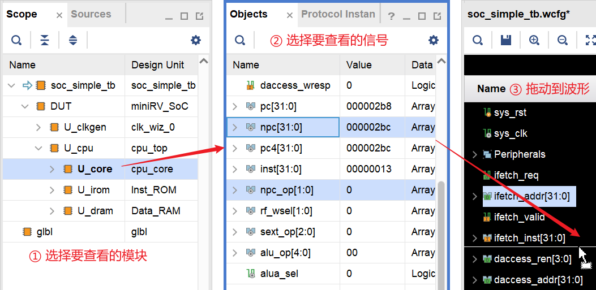
在波形上定位到1840ns处，可见此时ifetch_req有效，且ifetch_addr的值为32'h30，说明此时正在对地址为0x30的指令进行取指。在下一拍，即1860ns处，ifetch_valid有效，且ifetch_inst的值为32'hf0038393，说明地址为0x30的指令已经取到，机器码是0xf0038393，如图1-8所示。
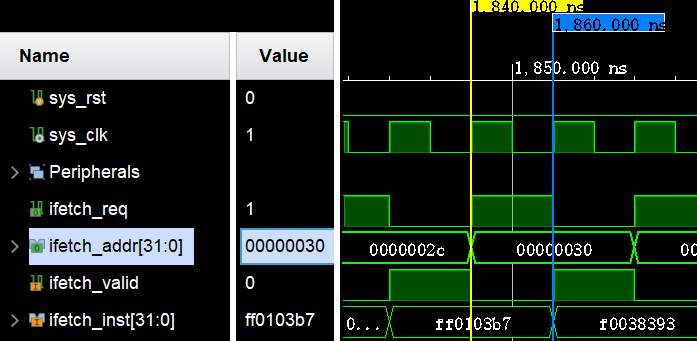
addi指令仿真波形示例 在lw.dump中搜索指令地址可知，地址为0x30的指令机器码是0xf0038393，即addi x7, x7, -256指令，如图1-9所示，与仿真波形相符。
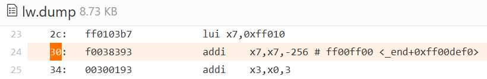
addi指令取指单元
addi指令的取指单元相关的数据通路和控制信号如图1-10所示。
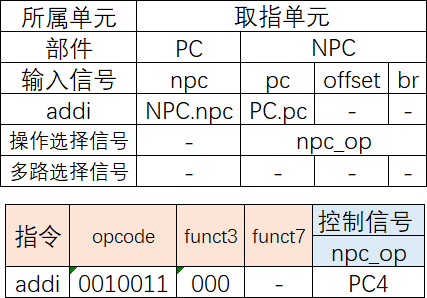
addi指令的数据通路和控制信号（取指单元） 由数据通路表可知，对于addi指令，PC的新值由NPC模块的npc输出信号产生，相关代码如下：
| cpu_core.v | |
|---|---|
89 90 91 92 93 94 95 96 97 98 99 100 | |
控制器译码后产生npc_op控制信号，并控制NPC模块输出PC+4作为下一条指令的地址：
| NPC.v | |
|---|---|
15 16 17 18 19 20 | |
由defines.vh头文件可知，宏定义`NPC_PC4的值是2'b00:
| defines.vh | |
|---|---|
14 | |
把控制器产生的npc_op信号、NPC产生的npc信号添加到波形，如图1-11所示。
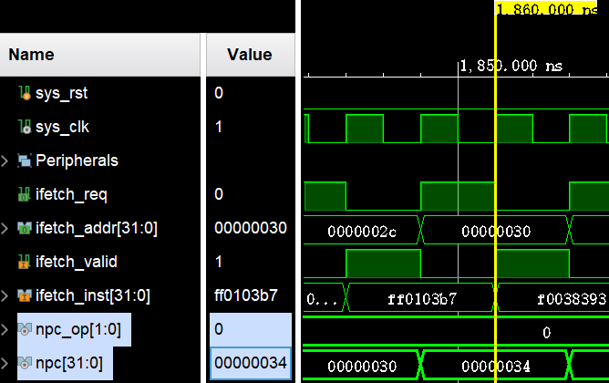
addi指令的取指单元的相关信号 注意，只有当ifetch_valid有效时，ifetch_inst才是有效的，相关信号也才是有效的。因此，我们应当观察npc_op和npc信号在1860ns的值。可见npc_op等于2'b00（即`NPC_PC4），npc等于32'h34（即当前PC值0x30再加4），与数据通路表、控制信号表及相关代码相符。
译码单元
addi指令的译码单元相关的数据通路和控制信号如图1-12所示。
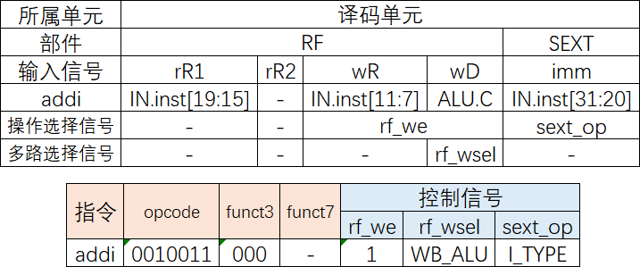
addi指令的数据通路和控制信号（译码单元） 由数据通路表可知，addi指令的源操作数是RS1寄存器和立即数。其中，RS1寄存器的值需要使用机器码第19位到第15位来读取RF获得，相关代码如下：
| cpu_core.v | |
|---|---|
130 131 132 133 134 135 | |
而立即数则使用机器码第31位到第20位在SEXT中通过I类型扩展得到，相关代码如下：
| cpu_core.v | |
|---|---|
141 142 143 144 145 | |
| SEXT.v | |
|---|---|
11 12 13 14 15 16 | |
此外，由数据通路表和控制信号表可知，addi指令需要把ALU的运算结果写回到目标寄存器，相关代码如下：
| cpu_core.v | |
|---|---|
229 230 231 232 233 234 | |
由defines.vh头文件可知，宏定义`EXT_I、`WB_ALU的值分别是3'b000、2'b00:
| defines.vh | |
|---|---|
18 | |
| defines.vh | |
|---|---|
23 | |
把控制器产生的sext_op、rf_we、rf_wsel信号，以及RS1寄存器的值（即RF的rD1输出信号）、扩展后的立即数（即SEXT的ext输出信号）添加到波形，如图1-13所示。
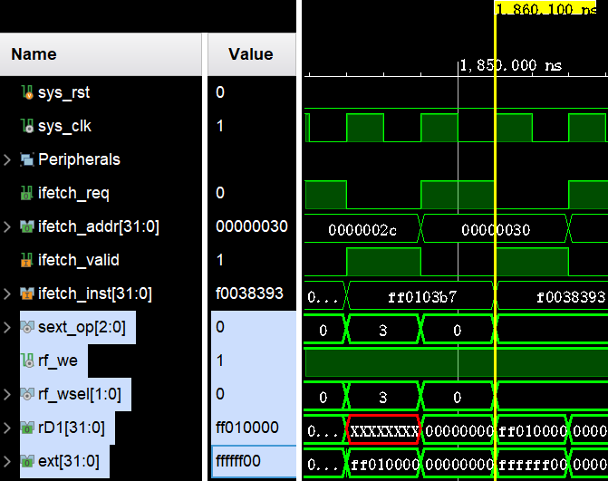
addi指令的译码单元的相关信号 同样地，我们应当观察ifetch_valid信号有效时的信号值。可见sext_op等于3'h0（即`EXT_I）、rf_wsel等于0（即`WB_ALU）、rf_we等于1表示指令要写回，与数据通路表、控制信号表及相关代码相符。
此外，由波形可知addi指令的寄存器操作数为0xff010000、立即数操作数为0xffffff00。
在ifetch_valid上升沿的瞬间，信号的值不正确？
demo工程使用Block Memory IP核作为指令存储器和数据存储器。Block Memory IP核有时会在时钟信号上升沿之后稍微迟一点才会输出指令或数据。
尽管信号发生了延迟，但指令的执行结果是在下一个时钟上升沿通过时序逻辑写回到RF的。因此，只要信号值在下一个时钟上升沿到来之前是正确的，指令的写回值就是正确的。
执行单元
addi指令的执行单元相关的数据通路和控制信号如图1-14所示。
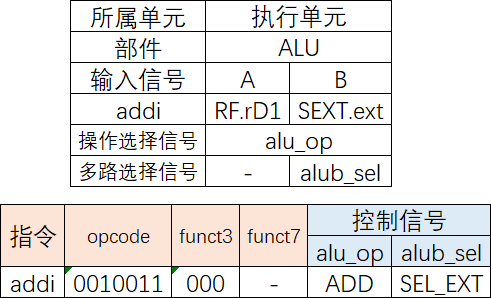
addi指令的数据通路和控制信号（执行单元） 由数据通路表可知，addi指令需要ALU完成加法运算。加法的源数据1来自RS1寄存器，源数据2来自扩展后的立即数，相关代码如下：
| cpu_core.v | |
|---|---|
169 170 | |
ALU在控制信号alu_op的控制下进行加法操作：
| ALU.v | |
|---|---|
26 27 28 29 30 31 | |
由defines.vh头文件可知，宏定义`ALU_ADD的值是5'h00:
| defines.vh | |
|---|---|
8 | |
把控制器产生的alu_op、alub_sel信号，以及ALU的操作数a、b以及运算结果c添加到波形，如图1-15所示。
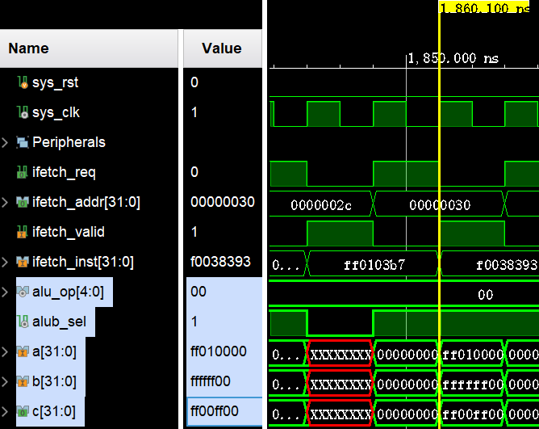
addi指令的执行单元的相关信号 由波形可知，alu_op等于5'h0（即`ALU_ADD）、alub_sel等于1（即选择立即数作为源操作数2），与数据通路表、控制信号表及相关代码相符。此外，ALU的两个操作数与译码单元得到的两个源操作数相同。
存储单元
addi指令的存储单元相关的数据通路和控制信号如图1-16所示。
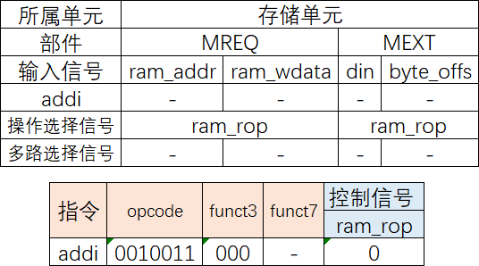
addi指令的数据通路和控制信号（存储单元） addi指令是算术运算指令，不需要访存，因此控制信号表中的ram_rop信号为0，对应波形如图1-17所示。
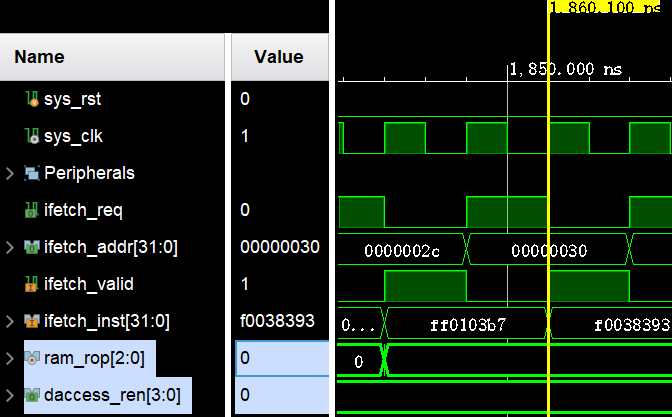
addi指令的存储单元的相关信号 由波形可知，ram_rop和daccess_ren均为0，表示指令没有发出访存请求。